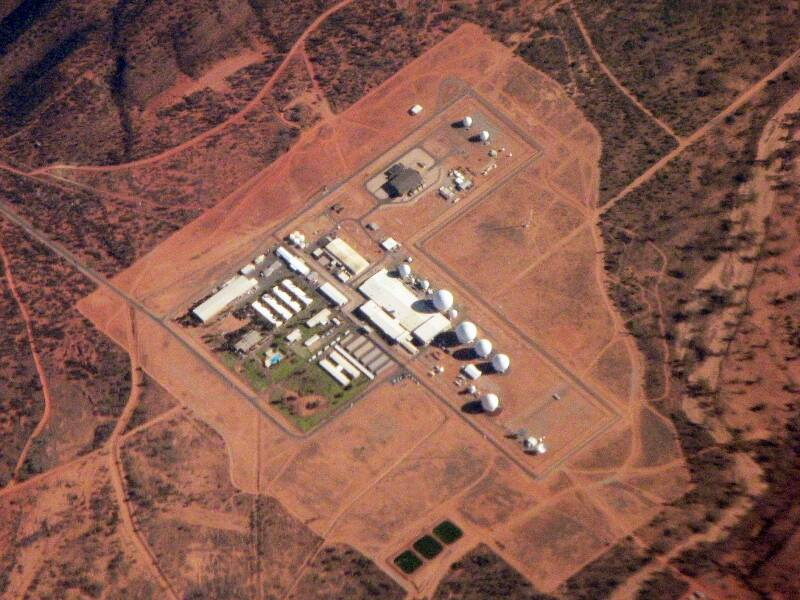

Pine Gap
Near Alice Springs, Australia

The Joint Australian-U.S. Defence Facility, a satellite ground station in the Northern Territory. 1
Open in the interactive Watcher
Sources
- Pine Gap Wikipedia
Near Alice Springs, Australia

The Joint Australian-U.S. Defence Facility, a satellite ground station in the Northern Territory. 1
Open in the interactive Watcher